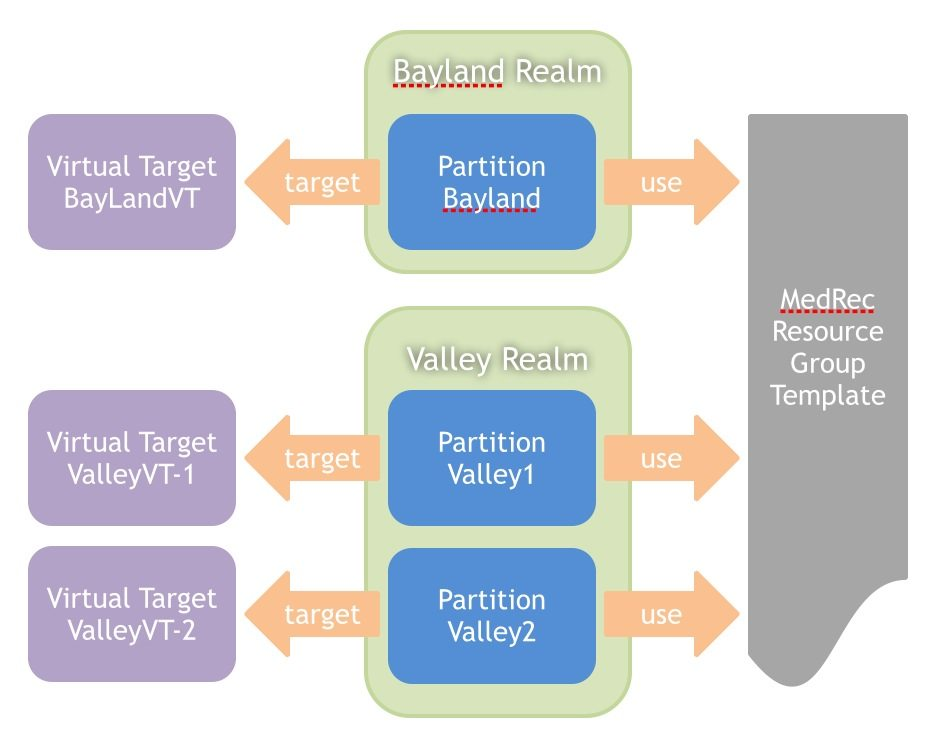

The WebLogic Server MT SaaS model provides a way to get the most efficient use from server resources while still providing resource isolation. In the MT SaaS model, you typically define one or more applications and the resources they depend on in a resource group template. You then reference this template from every domain partition in which you want to use the same applications. You make any domain partition-specific changes by editing the values of the associated resource group.
A tenant can have one or more partitions. In this sample, there are two MedRec tenants: Bayland Urgent Care and Valley Health. Bayland has one partition and Valley has two partitions.
To support WLS Multi-Tenancy, the SaaS MedRec sample activates the same deployable applications and resources multiple times, once for each MedRec partition that uses them.
There are three MedRec applications:
All resources, including JMS server and queue, data source, mail session, etc., are defined into a
resource group template named MedRecResourceTemplate with MedRec applications.
Here is a snippet of the config.xml showing how resources are defined in the MedRecResourceTemplate:
<resource-group-template><name>MedRecResourceTemplate</name><app-deployment><name>medrec</name>...</app-deployment><app-deployment><name>physician</name>...</app-deployment>...<jms-server><name>MedRecJMSServer</name></jms-server><jdbc-system-resource><name>MedRecGlobalDataSourceXA</name><descriptor-file-name>jdbc/MedRecGlobalDataSourceXA-9669-jdbc.xml</descriptor-file-name></jdbc-system-resource>...</resource-group-template>
The virtual targets ValleyVT-1 and ValleyVT-2 share one virtual host name but have different URI prefixes.
Here is a snippet of the config.xml showing showing separate URI prefixes for ValleyVT-1 and ValleyVT-2:
<virtual-target><name>VT-bayLand</name><target>MedRecServer</target><host-name>www.baylandurgentcare.com</host-name><host-name>localhost</host-name><uri-prefix>/bayland</uri-prefix></virtual-target><virtual-target><name>VT-valley1</name><target>MedRecServer</target><host-name>www.valleyhealth.com</host-name><host-name>localhost</host-name><uri-prefix>/valley1</uri-prefix></virtual-target><virtual-target><name>VT-valley2</name><target>MedRecServer</target><host-name>www.valleyhealth.com</host-name><host-name>localhost</host-name><uri-prefix>/valley2</uri-prefix></virtual-target>
The MT Single Server sample has three identity domains(IDD): admin IDD, bayland IDD for tenant Bayland, and valley IDD for tenant Valley. However, the Weblogic system administrator ("weblogic") is only in the admin IDD.
MedRec web app's web.xml requires the role "admin" for the app admininstrator log in, and the weblogic.xml maps the "admin" role to the "administrator" principal. So both bayland IDD and valley IDD have user "administrator".
Copyright 1996, 2019, Oracle and/or its affiliates. All rights reserved.